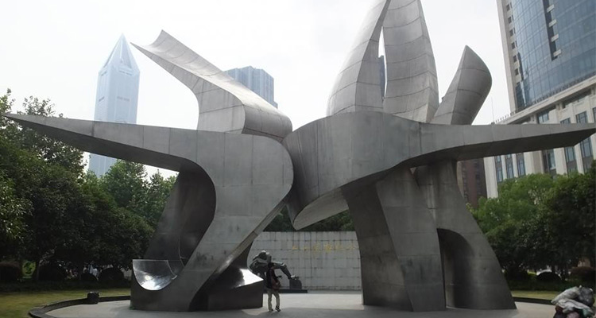
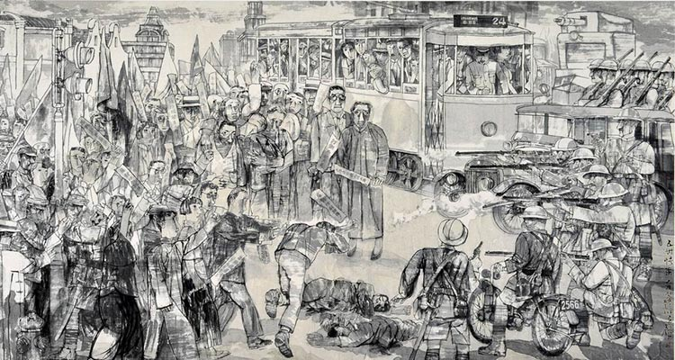

在上海最繁华的南京西路、西藏中路西南侧的一片绿地中，有一座银白色的现代雕塑，匆匆走过的路人也许并不会探究它的内在意义，只有认真端详并细看文字说明的人们，才能分辨出这个雕像其实是“五卅”两个字。
90年往昔，这场当年发生的震惊中外的大事件，在人们的视野中渐行渐远。可是，这些事情却是不应被忘却的。这是先烈们在自己祖国的土地上遭受过的羞辱与践踏，这是国人为了民族尊严与殖民统治展开的悲壮对决。
五卅运动是中华民国大陆时期反帝国主义和反当政的民国军阀势力的一场运动，是中国国民党上海执行部（第一次国共合作）策划及领导的第一个重大群众运动。1925年5月，上海日本纱厂工人举行罢工，抗议日本资本家无理开除工人。在斗争中，内外棉株式会社七厂的日本资方人员开枪开枪打死了共产党员顾正红，另七个工人受伤，激起了上海市民的愤怒。5月30日上午，几千名工人学生上街游行示威，但遭到英国籍巡捕的镇压，100多位爱国学生被捕。当群众要求释放被捕的学生时，英国巡捕竟然开枪，当场打死群众十多人，打伤无数，造成了震惊全国的五卅惨案。
自此，联合国已部署了69个维持和平行动，其中56个是1988年以来开展的。近些年，共有数十万名军事人员和数万名联合国警察以及来自超过120个国家的文职人员参加了联合国维持和平行动。当然维持和平的代价也是巨大的，迄今为止，来自约120个国家的超过3326名联合国维持和平人员为这项崇高的使命献出了宝贵的生命。
我们不能遗忘五卅运动，它像一把刺痛我们国人精神的长剑，时刻提醒着我们什么是民族力量，什么是一个民族的勇气。一部历史就是一面镜子，它可以告诉我们这样一个简单的道理：和平与安宁来之不易，是无数革命先烈抛头颅洒热血而来，即便历史沉重，但是却不应忘却。
1、任前方荆棘丛生，对待历史的严肃态度都应持之以恒；
2、以史为镜，才能变得更加强大。